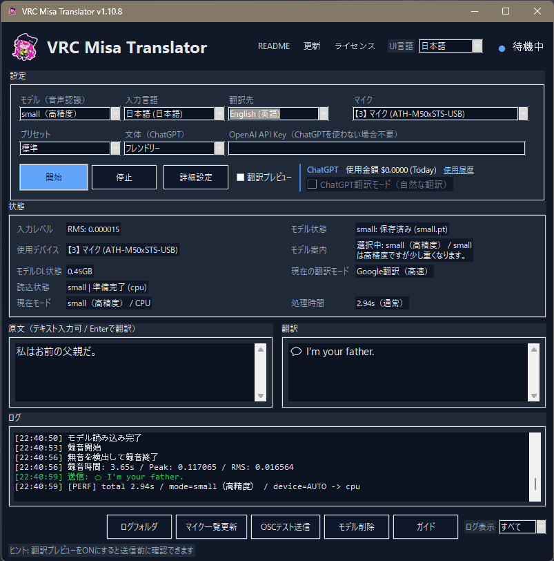

VRC Misa Translator
Real-time Translation Tool for VRChat
VRChat用リアルタイム翻訳ツール
🌍 Supports 20 Languages
20言語対応
🎤 Voice Input / ⌨ Text Input / 💬 OSC Chatbox
VRC Misa Translator is a desktop app that translates voice input or typed text and sends it directly to the VRChat Chatbox.
音声入力・テキスト入力を翻訳し、VRChat Chatboxへ送信できるデスクトップアプリです。
Application UI / アプリ画面
Clean desktop interface with real-time voice translation, text input, OSC Chatbox sending, and multilingual support.
リアルタイム音声翻訳・テキスト入力・OSC Chatbox送信に対応したデスクトップアプリ画面です。
UI languages currently available: Japanese / English
UI言語は現在、日本語 / 英語 に対応しています。

🌍 README
20 Languages Supported / 20言語対応
Please select your language. / 言語を選択してください。
Download
Download links are available on BOOTH and itch.io.
BOOTH と itch.io からダウンロードできます。
🗺️ Roadmap / 開発予定
Future updates currently being considered for VRC Misa Translator.
VRC Misa Translator の今後の開発予定です。
- Speech Recognition Correction / 音声認識結果の校正機能
- More Translation Styles / 文体選択肢の追加
- Automatic Language Detection / 話者の言語自動推定
- GPU Accelerated Version / GPU版の開発
- More to come...
Update Notes / 更新内容
The latest version improves text input translation, manual-input priority mode, message mark display, and README navigation.
最新版では、テキスト入力翻訳、手入力優先モード、マーク切替表示、README導線の改善などに対応しました。
About / このツールについて
VRC Misa Translator supports voice translation, manual text input, OSC Chatbox sending, and multilingual communication in VRChat.
VRC Misa Translator は、音声翻訳、手入力翻訳、OSC Chatbox送信、VRChatでの多言語コミュニケーションをサポートします。
© Misa / VRC Misa Translator